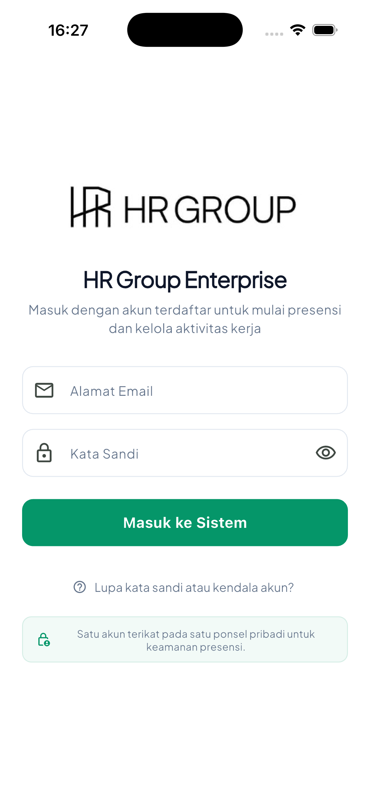
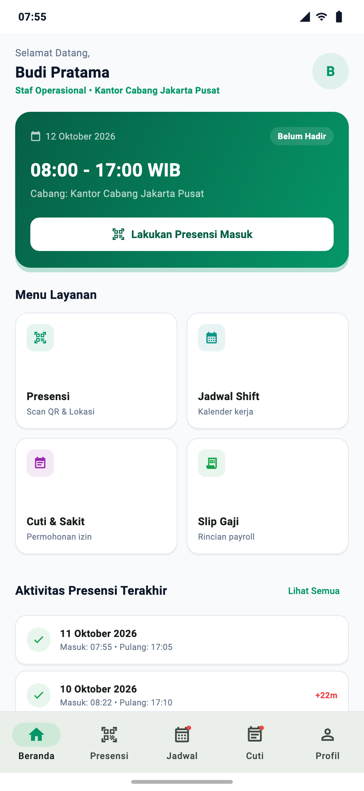
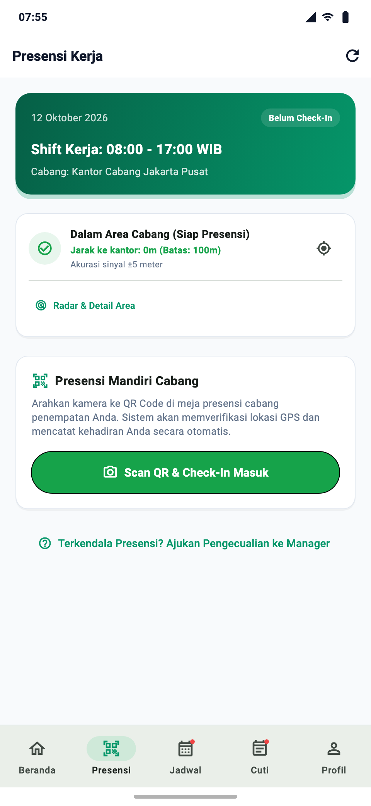
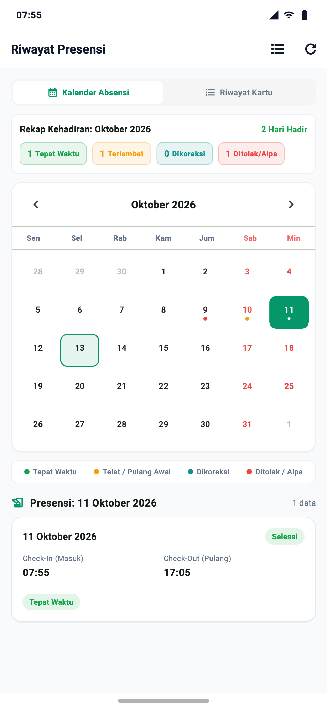
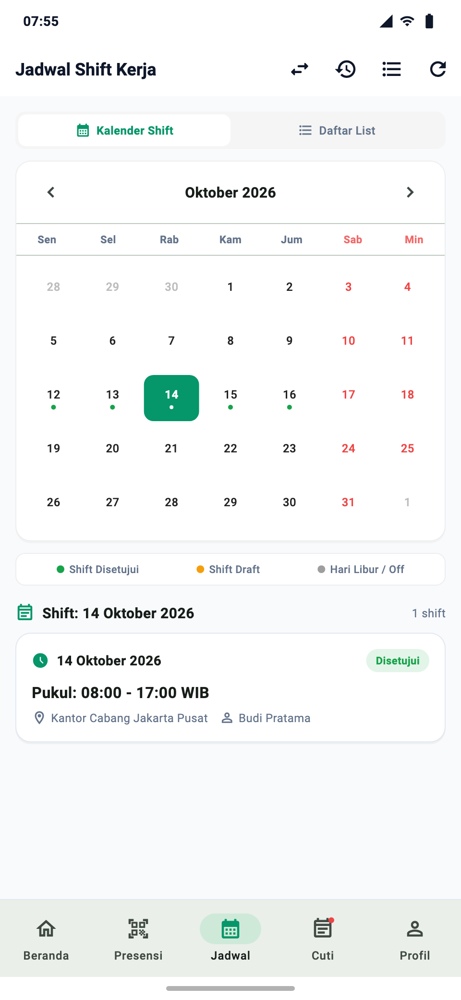
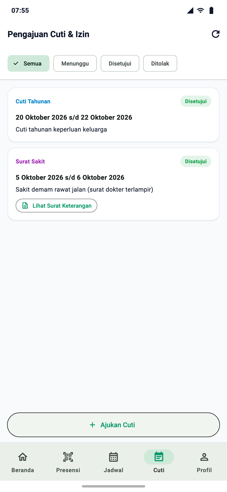
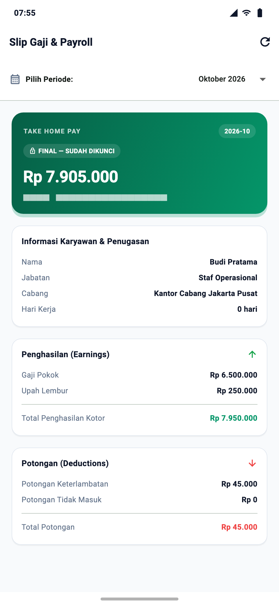
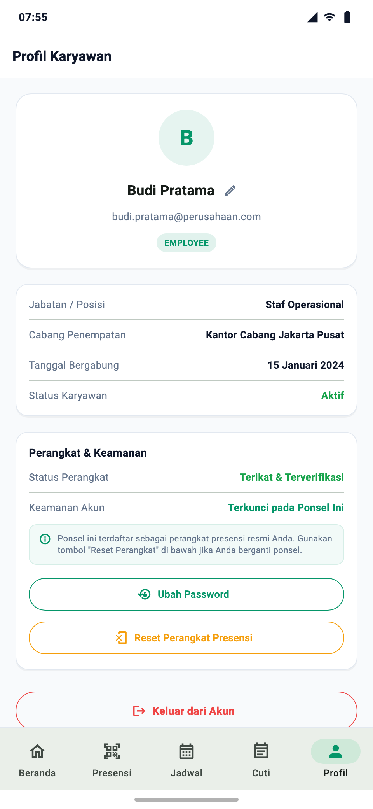

Panduan lengkap pengoperasian aplikasi mobile HR Group HRD (hrghrd) di smartphone: Prosedur Absen Masuk & Pulang (GPS Geofence + Dynamic QR Scanner), Lapor Kendala Presensi, Cek Jadwal Shift, Pengajuan Cuti & Upload Surat Dokter, serta Akses Rincian Slip Gaji Elektronik.

nama.karyawan@perusahaan.com).| Aturan Keamanan | Keterangan |
|---|---|
| 1 Akun = 1 HP | Akun Anda hanya dapat digunakan pada smartphone pribadi yang didaftarkan. |
| Anti Joki Absen | Percobaan login dari smartphone milik rekan kerja otomatis ditolak oleh server demi integritas data. |

| Badge Status | Warna | Kondisi & Tindakan |
|---|---|---|
| BELUM HADIR | Oranye | Shift Anda hari ini aktif, namun Anda belum melakukan Check-In. Segera lakukan presensi di kantor cabang. |
| SEDANG BEKERJA | Hijau | Check-In berhasil. Jam kerja berjalan dan waktu masuk resmi tercatat pada sistem. |
| SELESAI KERJA | Biru | Check-Out berhasil. Sesi kerja hari ini telah lengkap tersimpan di server. |
https://hrd.playgo.id.

Jarak ke kantor: 35m (Batas: 150m)). Anda siap melakukan presensi.
| Badge Status | Warna | Arti & Implikasi |
|---|---|---|
| Selesai | Hijau | Presensi masuk dan pulang lengkap serta disahkan. |
| Terlambat | Oranye | Absen masuk melewati batas toleransi 15 menit. |
| Pulang Awal | Kuning | Absen pulang mendahului jadwal usai shift. |
| Dikoreksi | Biru | Jam kehadiran telah disesuaikan manual oleh Manager/Admin. |
| Ditolak | Merah | Presensi dibatalkan/ditolak Manager. Sentuh kartu untuk membaca Alasan / Review Note dari pimpinan. |

Gunakan fitur ini apabila smartphone Anda mengalami kendala teknis di lokasi kerja (sinyal GPS terhalang gedung/basement, kamera buram, atau display QR padam) atau presensi Anda mendapat catatan Ditolak oleh Manager.
https://hrd.playgo.id.
| Badge Shift | Arti Status |
|---|---|
| Approved | Shift resmi berlaku. Anda dapat melakukan presensi pada jam tersebut. |
| Draft | Jadwal masih dalam peninjauan manajer. Hubungi manager jika belum disetujui menjelang hari H. |

| Status Cuti | Keterangan |
|---|---|
| Menunggu (Pending) | Permohonan telah terkirim dan menunggu otorisasi Manager Cabang. |
| Disetujui (Approved) | Permohonan disetujui. Kuota cuti tahunan Anda otomatis terpotong. |
| Ditolak (Rejected) | Permohonan ditolak oleh Manager beserta alasan penolakan. |

2026-10).| Komponen Slip | Tipe | Arti & Perhitungan |
|---|---|---|
| Gaji Pokok (Prorated Base) | Penerimaan | Gaji pokok dasar bulanan sesuai kontrak kerja resmi Anda. |
| Upah Lembur Resmi | Penerimaan | Tambahan upah tugas lembur yang disetujui Manager. |
| Potongan Keterlambatan | Potongan | Denda pemotongan atas akumulasi menit terlambat. |
| Gaji Bersih (Take Home Pay) | Total Transfer | Nominal akhir yang ditransfer ke rekening bank Anda. |
https://hrd.playgo.id secara adil dan transparan.

Pada bagian bawah layar profil, Anda dapat melihat baris Device Hash Terdaftar. Tanda centang hijau menunjukkan smartphone Anda telah terverifikasi resmi oleh sistem keamanan LRM Corporation.